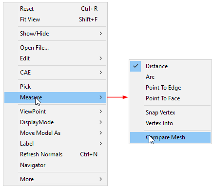
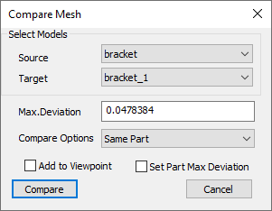
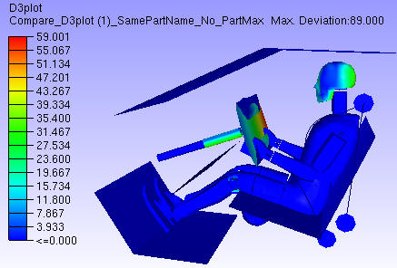
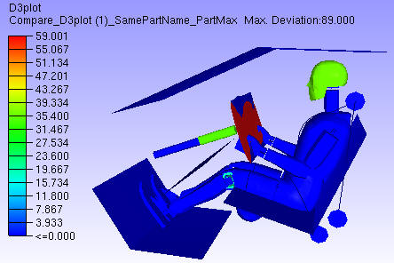
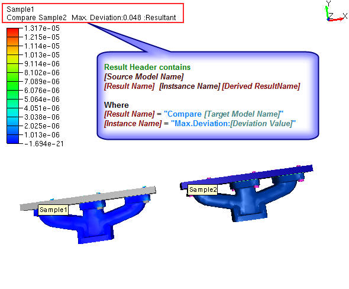
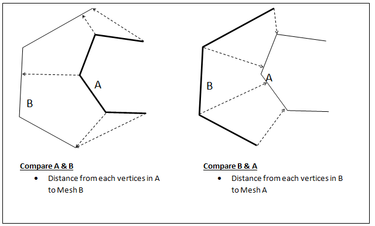
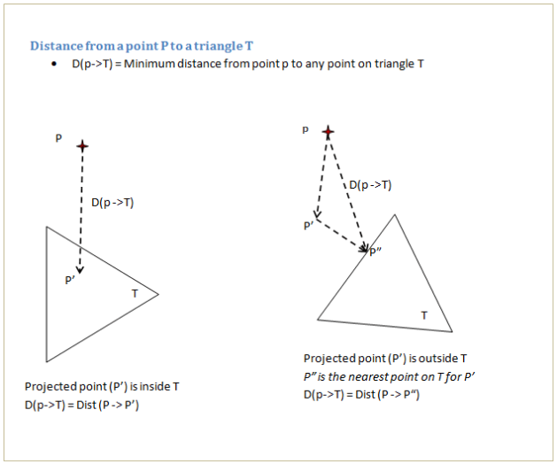

Compare Mesh
The Compare Mesh tool helps to compare mesh geometry of two merged models.
The two models are identified as source and target models. For each vertex on the source model, the nearest point on the target model is computed and the shortest distance value is stored as a CAE result for the source model. This new result can be displayed like any other CAE result.
Compare Mesh in Context Menu
Right click to open the context menu and then select Measure|Compare Mesh

Compare Mesh Panel
Click Tools| Compare Mesh

The various fields and options available on the Compare Mesh panel are explained below.
| Source | Select source model. |
| Target | Select target model. |
| Max. Deviation | Specify maximum deviation of interest. This value is used as a bound to select target mesh geometry. Default value is computed based on the source model bounding radius. |
| Compare Options | Select compare mode.
|
| Add to Viewpoint | New results will be displayed and added as a viewpoint. |
| Set Part Max Deviation | All nodes of the part are set with one maximum distance value. This will highlight modified parts. |
| Compare | Computes and displays deviation results. New result (or instance) is added to the CAE result list. |
Note:
If the Add to Viewpoint option is enabled/ON, a viewpoint with a name
‘[sourcemodel]_Vs_[targetmodel]_[maxDistanceValue]_[compareMode]’ will be created under the viewpath ‘Compare_Mesh’.
Users cannot compare same models again with same dialog parameters
Max. Deviation: Max. Deviation is used to filter the number of triangles in the target model used for finding the shortest distance for comparison. When Max. Deviation is a large value, more number of triangles are considered and computation can be slow. When no triangles are found within this limit, a large value is set as distance. The default value for the maximum deviation is set based on source model bounding box. User has to specify Max. Deviation based on the distance that needs to be measured. For quick analysis, users can set a small value based on the size of triangles.
Model/Part Transformation: All the model and part transformations (Pick & Move, Explode) are considered while computing the deviation.
Set Part Max Deviation: First deviation for each node in a part is computed. If the ‘Set Part Max Deviation’ option is false, the deviation for each node is stored as CAE result. If the option is true, then all nodes of the part are set with the same maximum part deviation. This way a part will have the same result or color. The parts with deviation will get highlighted by this option.
Contour without Part Max Deviation

Contour with Part Max Deviation

Steps to Compare Mesh
- Load and Merge at least two models.
- Click Measure Compare Mesh in the context menu to open Compare Mesh panel
- Select Source Model.
- Select Target Model.
- Specify Max.Deviation if necessary.
- Select Compare Mode from Compare Options.
- Click Compare.
- New CAE result with name “Compare [Target Model Name]” will be created with a new instance name “Max.Deviation: [Deviation Value]” to Source Model.
- New comparisons of same models can be created by changing Max.Deviation value. It will be appended to the same result as another instance or iteration.
- The same result is selected and applied for color plot.
- Users can handle this result as any other CAE result.
- Check Add to Viewpoint to add the scene with deviation contour to viewpoints.

Compare Mode Selection
- Select compare mode carefully, otherwise it leads to N/A or no results.
- If both the model contains parts with the same name, then select Same Parts mode.
- When part names are different, the options are:
- If there are many parts, to compare specific parts, hide unnecessary parts in source model as well as in target model. Then select mode as Visible parts.
- To compare all the parts, select mode as All parts. This is a time consuming option.
Steps to compare meshes
- Select appropriate parts in each model for comparison.
- A vertex set from the first (reference) model is compared with all the triangles in the second model. The nearest distance from each vertex in the first model to all the triangles in the second model is computed and stored as a new result in the first model. This result is displayed as a color plot. A distance limit specified by the user is used to filter triangles from the second model.

Note:
- It is recommended to use a model with higher mesh density as the first model.
- The models used for the comparison can come from CAD or CAE models.
- Distance from a vertex to a triangle is computed as follows:
